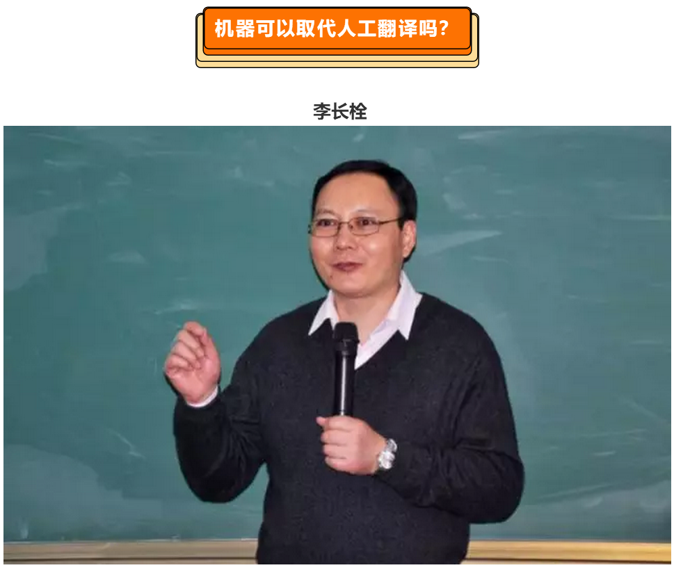

译见||蔡基刚 李长栓：机器翻译VS人工翻译
朋友们不时为时间的飞逝而大发感慨。拿已有十余年历史的中国职业翻译教育来说，当年曾踌躇满志地主动担负这一历史使命的人们，如今大多已两鬓斑白，有的甚至转成了退休教授身份。我们这些见证其开端，参与其发展，赞叹其硕果的朋友们，每每追忆起以往经历，感慨必由心生，这是正常的自然法则。的确，参与其中的朋友们从奓着胆子承接生疏任务到主动探索新的发展之路，从单纯传授双语转换技能到积极拥抱翻译智能技术，从坚守学者型独立翻译空间到参与规模化项目资源管理，从各校各学科各语种独自开发到跨校跨学科跨语种的联盟运作，从文字翻译单一教育到语言服务整体规划，从西学东渐型译介到外向型中国文化外译，从翻译硕士专业学位教育到包括学硕博的翻译教育体系全覆盖，这个复杂过程中的每一步无不浸透着翻译教育者和语言服务从业精英们的执着、汗水与智慧，每一步都充斥着经历者的理想、信念与奉献，我们的喜悦与骄傲是值得追忆的，也必将敦促来者们努力前行。
当然，中国语言服务业还有很长的路要走，路上还会有诸多坎坷等着我们去克服、逾越，“博雅翻译文化沙龙”正是带着这一崇高使命跨入了第二个十年，并在以往的十一届“中国翻译职业交流大会”，“中国语言服务40人论坛”，《中国应用翻译论文专辑》中尽力展示了大家的追求与想法。为了进一步践行“博雅翻译文化沙龙”的思想碰撞平台功能，我们推出这个“语言服务智库”网刊，期待教育界企业界的专家学者们在这一全新的平台上尽情表达自己的相关理念、观点、经验与规划，我们鼓励思想碰撞，不刻意追求结论，从多角度向各界关心我国语言服务事业的朋友们提供思想及方法，以进一步促进翻译教育及语言服务事业的长足发展。
本期针对“机器翻译VS人工翻译”推出中国语言服务40人论坛两位专家的文章，其中观点相悖，但各有千秋。作为智库成果，供大家参考。借此机会，我代表“博雅翻译文化沙龙”及“语言服务智库”周刊向赐稿的朋友们表示谢意，并期待着与大家一起为我们的共同事业进言献策，为各界朋友们多做一些力所能及的具体工作。是以序。
2019年7月21日 于北京西二旗亦神斋
北京外国语大学高级翻译学院教授李长栓在《机器可以取代人工翻译吗？》一文中表示：“要想通过机器翻译，实现自然语言的处理，恐怕还有很长的路要走；也许永远没有实现的一天。”而笔者的观点恰恰相反。我认为，特定领域的机器翻译替代人工翻译是技术发展的必然趋势，而且在医学、生物、法律、航天、海事等专业领域里的机器翻译取代大部分人工翻译将是最近几年的事情。
一、机器翻译的语境化
李长栓的文章之所以比较悲观，原因之一是他在阐述和论证时基本上脱离了语境。比如，文章举例mission一词，它当然在词典里有很多意思。但任何词都是在具体语境里出现的，小到句子和语篇的上下文，大到这个词出现在政治、外交或生物领域里，机器和人一样都会根据特定场景及背后的相关语料库进行鉴别和取舍，准确翻译出该词在特定语境下和特定上下文中的意思，根本不会出现是“使命”还是“使团”的纠结。同样，在英语defendants是翻译成刑事语境下的“被告人”，还是翻译成民事语境下的“被告或原告”这一问题上，李长栓担心“这些微小差别，更不能指望机器分辨出来”。我认为，这种担心犹如担心机器翻译无法解决如打球、打赏、打牌、打脸、打针，打毛衣中“打”字的歧义，这是没有根据的。机器翻译完全可以将其分辨出来。自信来自笔者对机器翻译原理和人工智能发展前景的认识。翻译的最基本原则是对语境，即语域（刑法诉讼、民法诉讼）、语类（法庭证词，法律合同）、对象、场合的综合考虑。从来没有“去语境化”的翻译，试图用文学翻译理论或一般翻译技巧和实践去开展教学，培养语言服务市场所需要的各种专门翻译人才，低效甚至无效，这也是我当年担任复旦大学外文学院翻译系负责人时，对翻译本科培养和翻译硕士培养的翻译教学提出的批评。
机器翻译（NMT：Neural Machine Translation）的根本原理就是语境化，即根据语境化原则建立海量的分门归类的语料库。以法律机器翻译为例：首先确定法律的各种语类（genres）,如法律合同、法庭判决书，法律诉讼书等大类，在法律诉讼书下再细化，分民事诉讼书、刑事诉讼书或军事诉讼书等次语类次语域。然后，按照次语类（genres）开始收集语料进行建库。语料库有双语翻译对等语料库（translation equivalent corpus）,即输入以往所有已完成的互译文本，和双语平行对等语料库（parallel register corpus），即输入尽可能多的、没有经过翻译的同一主题、同一语类的两种语言文本，这两种语料为海量语料库的对齐加工训练，奠定了基础。
二、机器翻译的语料库加工标准建立
研发和建立对语料进行人工加工的标准是机器翻译的关键或第一步。标准因学科或语域而异，如法律、医学、生物、物理，建筑、石油等都要分别建立一套可操作的、给原语语料加工规范的语言标准。标准分词汇和句子结构两大部分。词汇部分是研制这个学科或语域统一的词汇或词表，其中包括术语、专门词汇和普通词汇，如目前机器翻译对于生僻词（rare words）和外来词（loanwords）处理便是一个难题。由于在汉语科技文章中大量出现音译或意译的术语和技术名词，也由于不统一造成误译较多。如雷达(radar)、克隆（clone）、基因（gene）、抛光（polishing），克隆(clone)，拷贝(copy)，转基因食品（GMO）和镭射（laser）。即使两岸三地的意译也不能保证统一，如：software（软件/软体）， missile（导弹/飞弹），information（信息/资讯）, ensemble forecast（集合预报/采集预报），dielectric（电介质/介电质）和waveguide （波导/导波）。因此，标准是否可以规定对于外来词统一规定使用原词，如不用“转基因食品”而改回genetically modified foods 或GMOs。还有一些汉语比喻词或四字成语，可规定避免使用，如“耳闻目睹” 可改成 “听到的和看到的”。还有类似“顺理成章”和“胸有成竹”等，可要求改为通常无比喻的文字。
句法部分是规定使用统一的语法和句法结构。李长栓担心汉语中的“读书学习”，机器会翻译为“study study”。我们可以在对原文加工时进行切分处理，变成“读书与学习”，机器就会轻松翻译为“reading and learning”。类似的“美国会批准这个条约”，根据上下文，可以改造为“美国国会（将/可能）会批准这个条约”或 “美国会批准了这个条约”。再如对“这次故事幸亏实验人员做了充分的应急准备”这类的主题句改为机器可以识别和翻译的SVO主谓句：“幸亏实验人员做了充分的应急准备，才避免了这次事故的发生”。
如零型回指语或代词回指语的使用，规定采用词汇重复性回指，尽量避免人工阅读也有困难的零回指或代词回指。如“养殖鱼类的脂肪肝病症状就在全世界各水产养殖大国的几乎所有主养鱼类中出现，并对水产养殖业和市场消费者造成相当大的负面影响”加工为“养殖鱼类的脂肪肝病症状就在全世界各水产养殖大国的几乎所有主养鱼类中出现，这种脂肪肝病对水产养殖业和市场消费者造成相当大的负面影响”。
再如汉语流水句，即缺乏显性连词的一组小句的加工处理。如“这种设备操作简单，价格低廉，需求量这几年一直很大，使用者普及国内外”，改为“由于这种设备操作简单，价格低廉，因此需求量这几年一直很大，使用者普及国内外”。比较英语句子：Theinstrument has enjoyed a growing number of users in recent years both at homeand broad as it is cheap and easily used，显然加工后的句子与英语句子结构相似，保证翻译准确率的提高。再如对左伸展结构（即前置修饰语过多句子）的改写，把“确立转基因水稻中GUS蛋白质的免疫学检测方法”改为“针对转基因水稻中GUS蛋白质，确立免疫学检测方法”，这样可以更接近英语的表达：to establish animmunological detection method ofGUS protein in transgenic rice。对句子的改造，也包括对英语文本中的复杂句和被动句的处理，使其更贴近汉语的标准表达。
三、机器翻译对语料的对齐加工
最后是用建立的标准对原语语料进行加工，以便用加工后合适的、对齐的平行语料让机器学习和训练。这个语料加工的技术层面工作，可以让专业人员（懂英汉两种语言的法律专业人员）和语言服务专家完成，包括对机器翻译的译文进行与原文的比较和校对，然后修改后输回机器，再让其进行再学习翻译，再修改和完善语料库文本。这样，随着机器翻译实践的不断增加，这款专业翻译机器的准确率达到90%甚至以上不是不可以做到的。翻译内容越专业，场景或任务越固定，标准越统一，翻译准确率就越高，替代人工翻译不是不可能。最后10%是人工的校对。一般说来在建立专门（如法律、医学、石油）机器翻译语料库时，根据标准所开展的语料加工对齐（即词汇和句法的调整）工作量比较大，如一个次语类往往需要几十万的平行句。但有了标准，可以组织目前的MTI翻硕学生进行。以后运用可以有两种情况。一是要求专业共同体作者用确立的标准撰写如法律期刊论文，化学实验报告、土木工程合同等，即作者必须按这一语类语域标准中规定的词汇，句法和修辞等来进行写作。这个不是不可以做到的。如写法律期刊论文，首先是汉语的法律圈内推行标准，其次是国际的法律圈内。二是对不按标准写作的，在机器处理前，首先安排人工按标准对原语加工处理(这种处理还是比人工翻译快多)。
笔者曾经让学生做机器翻译实验，选择的是汉语医学期刊和物理期刊上的论文摘要（有中文和对应的英语摘要），使用的是我们学校引进的Google Translate。这个还是通用性神经机器翻译，不是专门的医学机器翻译或材料机器语料库。但用我们自己建立的标准，对汉语摘要进行词汇和句法加工规范后，然后让Google Translate翻译，出来的英语译文准确率比没有经过处理加工的译文有了很大的提高。然后把译文经过人工调整，再翻译回去，数次反复后，汉语摘要的机器翻译基本接近原来的英语摘要。机器翻译与机器人阿法狗(Alpha Go)的原理基本一样，阿法狗机器人不仅被输入3000万围棋高手们的棋谱，而且能够在与真人高手对局中自我学习和训练，不断提高自身棋力，因此能接连打败世界围棋第一人就毫不奇怪了。几年前，不少人认为机器人阿法狗是永远不可能战胜人类棋手，但是短短二三年这个说法不是变成了笑话了吗？
四、翻译专业硕士或博士的新任务
人工智能的发展和机器翻译时代的到来为全国249个翻译专业硕士点带来了新的课程定位、学习课程和教学实践。第一，翻译专业硕士必须和计算机院系跨界开课，学习计算机原理和编程，语料库赋码与运用等课程。第二，翻译专业硕士必须和特定领域的专业院系跨界开课，学习特定专业领域1）最基本的专业知识，2）专业和专业词汇，以及各种专业表达。第三，翻译专业硕士必须结合特定专业，学习该学科或领域的各种语类（如期刊论文、案例报告和工程合同等）的知识内容是如何用英语和汉语构建和传播的，包括语篇结构，修辞手段，元话语使用和句法结构。第四，翻译专业硕士教学实践就是1）研制特定领域的机器翻译语言标准（词汇和句法），2）用标准对语料进行对齐加工，训练和完善机器翻译。
翻译专业硕士毕业后，主要去向就是语言服务工作者或留校担任翻译专业教师。随着科技、经济和文化的发展，专业信息以海量方式增加，加快并且大量进行专业期刊和著作的翻译是必然趋势。机器翻译的发展使得专业出版社（石油、医学、农业、艺术等）的结构和职能也将发生了巨大的变化：从过去的来料翻译作品编辑到自己生产翻译文本，即引进机器翻译后他们不需要找专业翻译进行人工翻译了。但是，从目前机器翻译的发展程度看，再专业也还达不到100%的翻译准确率，解决人工的校对和修改这最后一公里的问题是不可避免的，但这种编辑不是文字翻译，也不是仅懂翻译技能的编辑，而是必须有专业知识（如他们根据浏览源语文献标题和摘要知道翻译的需要和价值，在编辑翻译文本时根据专业知识能判读翻译的错误准确以便核对原文）和专业翻译能力的编辑。这就是语言服务的一种工作。我们过去的翻译教师来源有三种情况，1）翻译理论研究者，2）文学和文献翻译实践者，3）学术翻译博士毕业留校者。无论哪一类都不符合蓬勃发展的翻译专业硕士乃至今后翻译专业博士的要求。调查发现，过去20年里80%的翻译博士论文的主题是翻译理论研究、翻译史研究和文学翻译研究等（穆雷、邹兵，2014），与专业和行业的翻译研究和实践没有任何关系，因此很难胜任机器翻译时代的翻译专业教学。按照本文第一节描述的翻译硕士和博士专业翻译课程培养方案和课程设置，这些毕业生无疑提供了新一代可以胜任机器翻译时代的翻译教师。
在人工智能高度发展的时代，我们千万不能低估机器翻译替代人工翻译的可能性。我坚信，专业机器翻译取代大部分人工翻译（除文学作品外）是最近几年的事情。翻译界必须为这个时代的到来做好准备，尤其是翻译硕士专业必须在教学定位和课程设置等方面进行专业结构的调整。
参考文献
李长栓：《机器可以取代人工翻译吗？》，2019年https://zhuanlan.zhihu.com/p/60274468
穆雷、邹兵：《中国翻译学研究现状的文献计量分析（1992-2013）—对两岸四地近700篇博士论文的考察》，载于《中国翻译》2014年第2期。
人工智能的发展非常迅速，翻译的准确性越来越高，以至于有人担心译员是否会失业，甚至有的家长担心孩子学习外语专业，将来找不到工作。本人的判断是：机器翻译可以极大方便人们获得国外的信息，提高专业译员的工作效率，但要想进行深度思想交流，还是必须依赖人工翻译，最好是直接学习外语。
人工翻译的成本很高，速度很慢。以国际机构为例，专业译员每天的工作量大概是5个标准页（共1650个英文单词），按照中等级别译员的待遇折算，每个英文单词至少0.15美元。所以，普通的用户用不起专业翻译，也没有那么多专业译员可以满足海量的翻译需求。而成本低，速度快，正是机器翻译的优势，即使翻译不够准确，也能够在一定程度上满足用户需求。况且，普通人最多只能熟练使用两三门语言，而机器翻译则不受语言的限制。所以，机器翻译的发展可以让普通大众轻易获取大量国外信息。对于专业译员来说，可以利用机器翻译来做初稿，然后编辑加工。如果机器翻译准确率平均达到50%，就可以提高50%的效率。不准确部分虽然没有逻辑，但一些用词有可能是正确的，可以通过人工修改加以完善；起码可以省却一些打字时间。此外，机器翻译软件还有助于不同译者统一用词，对于需要分工合作的任务来说，可以节省统稿时间。
机器翻译难以克服的问题机器翻译尽管发展迅猛，但不同语言之间的翻译，准确性有很大不同。对于结构比较相似、单词意思可以完整对应的语言，或者有一定转换规律的语言，比如欧洲语言之间，机器翻译已经达到相当高的水平，专业译员进行少量编辑，就可以做正式翻译文本使用。但对于概念对应不整齐、结构差异较大的语言，比如汉语和英语，机器翻译需要改进的空间还很大。举个简单例子。mission一词，基本意思是“交给一个人或一群人的一项重要任务，通常需要旅行到国外完成”（牛津英语词典）。在这个意思基础上，引申出“使命”“任务”“特派任务”“出差”“使团”“代表团”“特派团”“传教团”“访问团”等具体意思。如果把mission翻译为法语，译者（包括机器翻译）不需要任何思考，因为法语中也有这个词，拼写相同，只是读法不同，每个义项也相同。也就是说，在具体语境下，mission表示什么意思，译者并不需要关心，让译文读者去判断即可。但如果要翻译为汉语，译者就必须根据上下文判断翻译为“使命”还是“使团”等。这个判断并非一目了然。如果交给机器翻译，机器通常会根据统计得出的概率，选择最常见的那个意思，而这往往会出错。
英语的句子结构可能十分复杂，从句套从句，一句话好几行。一些介绍机器翻译的文献中称，政府文件、法律文献等比较正规的语言，机器翻译相对准确性较高。这可能是针对欧洲语言来说的。因为欧洲语言之间的结构比较相似，翻译不需要太多结构调整。但汉语结构简单，缺乏类似英语的从句结构，把英语翻译为汉语，需要译者反复思考，化整为零，把复杂结构变为简单结构，才能有效传达原文的意思。机器缺乏逻辑分析能力，很难把复杂的结构，转化为有意义的简单结构。
比如，这是机器翻译出来的一句话，看大家能否读懂：“政府有六项强制性质疑，当被告被控犯有可判处一年以上监禁的罪行时，被告或被告共同提出10项强制性质疑。”这句话来自美国的《刑事诉讼规则》，讲的是如何挑选陪审团成员，准确的意思是：“当被告人被控犯有可判处一年以上监禁的罪行时，公诉人可以不说明理由排除六名（候选陪审员），被告人（包括多名）总共可以不说明理由排除10名（候选陪审员）”。这还是英语中相对简单的复杂句。遇到真正的复杂句，机器更是弄不清各部分之间的关系。
顺便指出，机器翻译中的“被告或被告”，来自英文defendant ordefendants。因为汉语无单复数之分，所以机器都翻译为“被告”。人工译员意识到此处的单复数有区别意思的作用，所以，变通处理为“被告人（包括多名）”。至于机器翻译用“被告”，人工翻译改为“被告人”，那是因为在中国的法律中，“被告人”用于刑事案件，相对于“公诉人”；“被告”用于民事案件，相对于“原告”。这些微小差别，更是不能指望机器分辨出来。
汉译英时，中文的句式虽然简单，但语言表达习惯独具特色，特别是政府文件，即使中文读者，也很难吃透文字之外的含义。比如：“学生的第一任务就是读书学习。高校必须围绕学生刻苦读书来办教育，要引导学生读“国情”书、“基层”书、“群众”书，读优秀传统文化经典、马列经典、中外传世经典和专业经典。”其中的“‘基层’”书、‘群众’书”，如果由人来翻译，会先调查一下两个说法背后的含义，然后换一种说法把意思表达出来。机器翻译则只会翻译文字，比如，某翻译软件就将“‘基层’”书、‘群众’书”翻译为“‘basic’books, ‘mass’books”，恐怕英文读者更难以看懂。另外，人工翻译会注意到“读书学习”是一个概念，可以笼统翻译为study。但机器看到“读书”，就会翻译为study，看到“学习”，也会翻译为study。“读书学习”就会翻译为“study study”。在人看来，这是十分可笑的。
译员每天翻译的文件，有很多是匆忙中炮制出来的，没有经过专门编辑，会出现不严谨的表达。人类译者遇到质量低劣的文件，会通过调查研究或询问作者，弄清原文的意思，然后在译文中予以改善。但机器翻译只会忠实地翻译。比如：“检察机关的监督只限于对劳动教养场所刮泥和教育改造工作的监督，而对至关重要的审查批准没有监督权。”其中的“刮泥”译者难以理解。劳动教养场所为什么要“刮泥”？哪里来的“泥”？有那么多泥可以刮吗？这样的工作不符合常识。通过上网调查劳动教养场所的日常工作，确实没有“刮泥”这项任务。经过反复思考，突然醒悟：原来应该是“管理”。因为作者使用拼音输入法，guanli漏掉一个l，自然就成了“刮泥”。但机器翻译则会煞有介事地翻译为“mud-scraping”（“刮泥”）。
有的人喜欢用成语，但不一定恰当。译者要根据上下文，判断作者到底在说什么，不一定严格按照作者的说法来翻译。比如，前两年中国政府曾经出台一份文件，要求打掉大院的围墙，疏通毛细血管，改善城市交通。记者采访新加坡城市规划之父刘太格，提了这样的问题：“《意见》出台后，大家热议的焦点在是否该拆掉大院和封闭小区的院墙。而中国小区的发展史，也是从开放式小区，由基层组织如派出所引导建立封闭式小区，而现在又因为交通拥堵，希望开放小区释放道路的“毛细血管”，政策的“朝令夕改”，以及这条疏缓交通的新办法，你认为合理吗？”其中的“朝令夕改”，是指政策变化很快。但从前面的铺垫来看，几十年间政策实际才变了一次，算不上“朝令夕改”。编辑恐怕也意识到了这一点，所以加了引号。如果要把“朝令夕改”翻译为英文，就不能按照成语的本义来翻译，而是变通地译为“变化”。如果是机器，恐怕就不会想这么多。实际上，本人试了一下某网络翻译引擎，它甚至不能理解这个成语，因为它把“朝令夕改”翻译为“changing the future”（改变未来）。
以上的例子说明，机器翻译还有很多盲点。这些盲点恐怕不是一时半会儿可以克服的。对于广大用户来说，如果要想利用机器翻译进行交流，必须使用结构最简单、语法最完整、用词最基础、对任何人都明白无误的语言。要想通过机器翻译，实现自然语言的处理，恐怕还有很长的路要走；也许永远没有实现的一天。
作者是北京外国语大学高级翻译学院教授